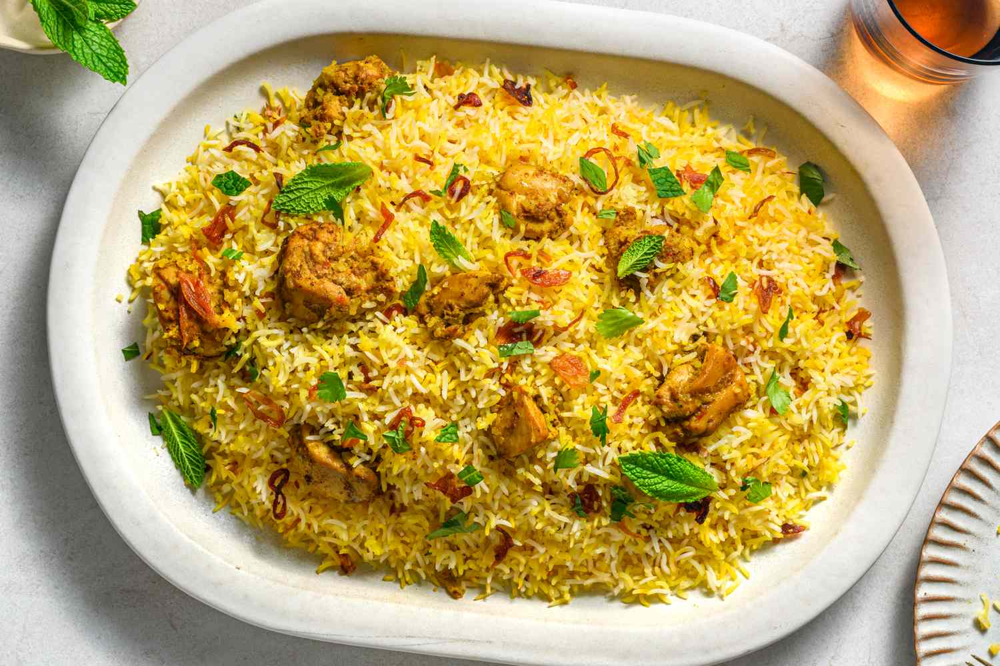

Biryani Recipe
Home

Ingredients
- 2 cups Basmati rice
- 1 lb Chicken, cut into pieces
- 1 cup Yogurt
- 2 Onions, thinly sliced
- 2 Tomatoes, chopped
- 4 cups Water
- 2 tbsp Biryani masala
- 1 tsp Turmeric powder
- 1 tsp Red chili powder
- 1/2 cup Fresh coriander leaves, chopped
- 1/2 cup Fresh mint leaves, chopped
- 4 tbsp Cooking oil
- Salt to taste
Steps
- Rinse the basmati rice under cold water until the water runs clear. Soak the rice in water for 30 minutes, then drain.
- In a large pot, heat oil over medium heat. Add sliced onions and sauté until golden brown. Remove half of the onions and set aside for garnishing.
- Add chicken pieces to the pot and cook until they turn white. Add yogurt, biryani masala, turmeric powder, red chili powder, and salt. Cook until the chicken is tender.
- Add chopped tomatoes, coriander leaves, and mint leaves. Cook for another 5 minutes.
- In a separate pot, bring 4 cups of water to a boil. Add soaked and drained rice to the boiling water. Cook until the rice is 70% cooked. Drain the rice.
- Layer the partially cooked rice over the chicken mixture in the pot. Sprinkle the reserved fried onions on top.
- Cover the pot with a tight-fitting lid and cook on low heat for 20-25 minutes to allow the flavors to meld together.
- Once done, gently fluff the biryani with a fork before serving. Serve hot with raita or salad.